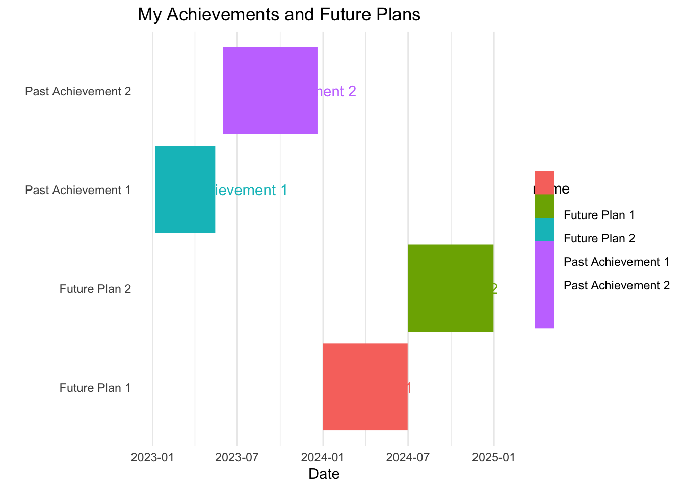

gantt
title My Achievements and Future Plans
dateFormat YYYY-MM-DD
axisFormat %b-%Y
section Past
Bachelor of Science :done, des1, 2019-02-01,2022-11-01
Bachelor of Science (Honours) :done, des2, 2023-02-01,2024-06-01
section Future
Future task1 :active, des3, 2023-09-01, 2024-01-01
Future task2 : des4, 2024-02-01, 2024-06-01
Goals
Work in progress.
library(ggplot2)
library(ggthemes)
data <- data.frame(
name = c('Past Achievement 1', 'Past Achievement 2', 'Future Plan 1', 'Future Plan 2'),
start = as.Date(c('2023-01-06', '2023-06-01', '2024-01-01', '2024-07-01')),
end = as.Date(c('2023-05-15', '2023-12-20', '2024-06-30', '2024-12-31'))
)
# Create the Gantt chart
ggplot(data, aes(x=start, xend=end, y=name, yend=name, color = name)) +
geom_segment(linewidth=30) +
labs(title='My Achievements and Future Plans', x='Date', y='') +
theme_minimal() +
theme(panel.grid.major.y = element_blank(),
panel.grid.minor.y = element_blank()) +
geom_text(aes(label=name), hjust=0, vjust=0.5)